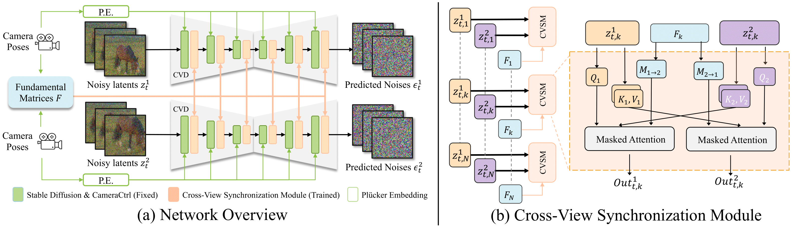

Abstract
Research on video generation has recently made tremendous progress, enabling high-quality videos to be generated from text prompts or images. Adding control to the video generation process is an important goal moving forward and recent approaches that condition video generation models on camera trajectories make strides towards it. Yet, it remains challenging to generate a video of the same scene from multiple different camera trajectories. Solutions to this multi-video generation problem could enable large-scale 3D scene generation with editable camera trajectories, among other applications. We introduce collaborative video diffusion (CVD) as an important step towards this vision. The CVD framework includes a novel cross-video synchronization module that promotes consistency between corresponding frames of the same video rendered from different camera poses using an epipolar attention mechanism. Trained on top of a state-of-the-art camera-control module for video generation, CVD generates multiple videos rendered from different camera trajectories with significantly better consistency than baselines, as shown in extensive experiments.
Method Overview
Left: The model takes two (or more) noisy video features and camera trajectories as input and generates the noise prediction for both videos. Note that the image autoencoder of Stable Diffusion is omitted here; Right: Our Cross-View Synchronization Module takes the same frames from the two videos along with the corresponding fundamental matrix as input, and applies a masked cross-view attention between the frames.
Applications
Video Pair Generation
Face-forward Elliptical Generation
Plug-and-Play on Dreambooth/LoRA
Multi-Video Generation